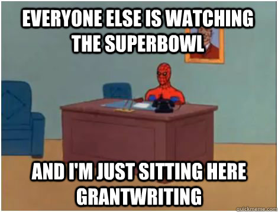

Rejection in any context sucks. As a new faculty trying to prove himself (to himself, but most importantly, to his tenure committee), I particularly hate rejections in the context of grant proposals and paper submissions. The “nice” thing about the latter rejection is that it’s marginally easier to resubmit a manuscript elsewhere; there are more journals and conferences than ever, especially in computer science.

Last September, I submitted a proposal in line with NSF’s 15-569 program solicitation: the Research Initiation Initiative in Computer and Information Science and Engineering.
Insert jokes involving “initiation initiative” imagery here (sorry, I don’t have an avalanche of Advil).
Somewhat unsurprisingly but nonetheless disappointingly, I received notification today that the proposal was rejected. I say unsurprising because the proposal itself was incredibly rushed; we hit “submit” about two minutes before deadline. It was my first major grant proposal, so there were bound to be some mishaps.
So: let’s get into the reviewer feedback!
Reviewer 1
This was the longest review (aside from the Panel Summary). The reviewer listed the Strengths and Weaknesses of the proposal (which I appreciate). For instance, one of the given strengths:
The proposed work seeks to address these limitations: the innovation of this work is the combination of traditional and nontraditional data sets in a tool for disease forecasting.
And weaknesses:
The research plan is lacking detail, which significantly call into question the intellectual merit of the proposal. For example, very little detail is given regarding how the models in Task 1 and 2 will be tested. Eg, how will the team determine that the models are operating at a sufficient level of accuracy?
This point is particularly brutal:
It’s unclear how the proposed work will help him differentiate his work from work done previously with graduate advisors.
That, more than anything else, is dangerous territory. The first weakness can be described as a consequence of rushed writing. The second is systemic and not trivial to assuage.
Overall, this reviewer gave the proposal a rating of “Fair.”
Reviewer 2
The feedback here wasn’t quite as structured as Reviewer 1, but still provided a reasonable level of detail.
Strengths are the concept of developing a […] based on […], and […], both in terms of […] and […]. Another strength is the PI’s experience with […], and in using […].
Put another way: the reviewer liked the general idea, and the fact that I’ve had a little experience with it in the past.
However, several major concerns are: 1) as far as I can see, the PI doesn’t have a great deal of experience working with […].
This was an excellent point. I mentioned a particular strategy but formally don’t have any training with it. I neglected my own rule of “justify everything” here.
- No clear description of the data mining and statistical methods for error evaluation and estimation of signals from the inevitable noise from […]
Rookie mistake on my part.
- validation of system predictions underdeveloped, when this would be of major importance
Also a rookie mistake.
- finally, the choice of […] seems idiosyncratic. The budget is for […]. No involvement of […], which again casts some uncertainty as to successfully developing and implementing the […].
This ties back with the reviewer’s first criticism: since I don’t have much experience with this certain strategy, the next best thing would be to provide funding for someone who does, which I did not do.
Part of the reviewer’s summary included this line:
It will also be remarkable if all the activities proposed can be achieved within 2 years, especially given that most of the work will presumably be carried out by graduate and undergraduate students.
In a way, this is something of a relief: my original plan had been to submit a CAREER proposal on this topic; if a reviewer thinks the topic is too large-scale to be done in two years, it may be the right scale for a 5-year CAREER award.
Overall, the reviewer gave the proposal a rating of “Fair.”
Reviewer 3
The third reviewer is something of an outlier, though not in the usual way.
The feedback was extremely succinct, and universally positive (knee-jerk aside: was this a student?). It was also at a very high level; it never addressed the details of the proposal, only the big-picture ideas. Here’s the summary:
Overall, the proposed research activities have significant potential to be transformative. The two core objectives and corresponding tasks ([…]) seem ambitious to the reviewer. Integration of research and educational activities are relevant and intersect various disciplines (computer sciences, cellular biology, genetics).
Well-written, but nonetheless out of sync with the other two reviewers. Don’t get me wrong–I greatly appreciate some positive feedback on my first NSF proposal as PI! This reviewer gave the proposal a “Very Good” rating, which is also a nice shot to the ego. But it’s clear there were some glaring weaknesses that, for whatever reason, this reviewer chose not to elucidate.
Panel Summary
Nothing surprising here. The strengths from the previous reviewers were identified, along with the numerous accompanying weaknesses. The panel did address the issue of broader impacts:
Although the proposal has merits, the PI may need to clarify clearly as to the major justification for developing the proposed tool in relation to other initiatives in this area, eg […]. The panel also highlighted several problems and questions with regards to […]. Until these problems are addressed, it was felt that the broader impact of this project, particularly the probability of […], is likely to be moderate to low
That, along with a “Low Competitive” panel recommendation, pretty much sums things up.
Conclusions
For the vast majority of weaknesses, their immediate impetus can be summed up thusly: I started writing the grant the day before deadline. That’s a no-no, and contributed directly to the panicked flurry at the end and lack of detail in the proposal itself. Starting earlier will solve these problems.
The last point that genuinely concerns me, though, is the first reviewer’s comment on differentiating myself from my graduate advisors. It’s true that this proposal took work I started as a graduate student, and I agree that it’s important to build an independent research group such that I don’t have to rely on my graduate advisors for funding.
But I suppose I could boil this down to time constraints as well: given more elbow room, I could have provided a more detailed development plan that clearly differentiated itself from work done before. Rather than relying on the “we propose to extend…” mantra, I could have delved into much greater detail on the methods I’d wanted to use and why their application would be novel.
So there you have it: a review of grant reviews. Nothing left to do here but incorporate the feedback and push out more effective proposals in the months to come!